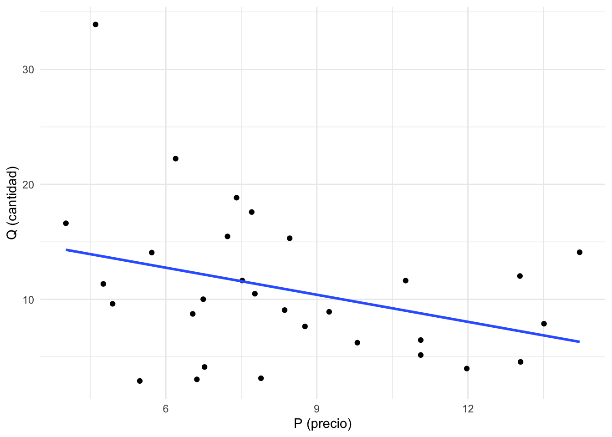
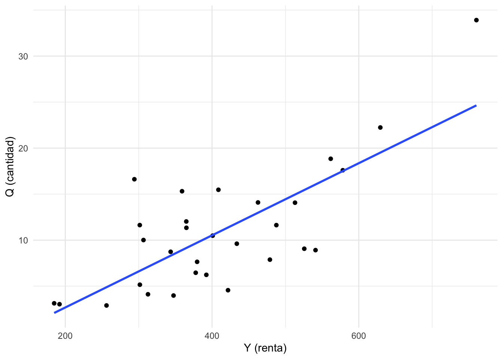
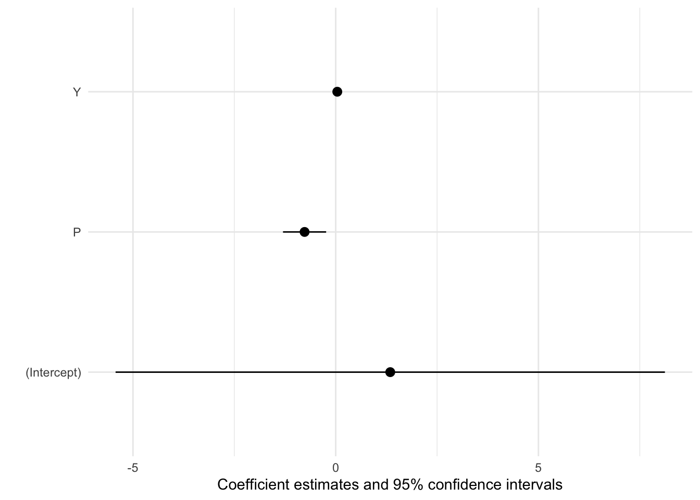
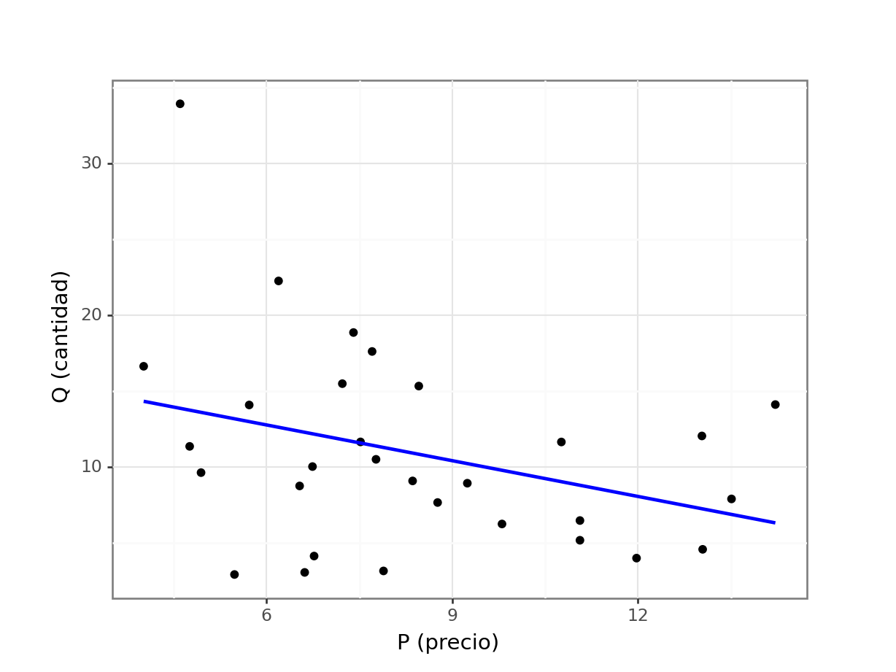
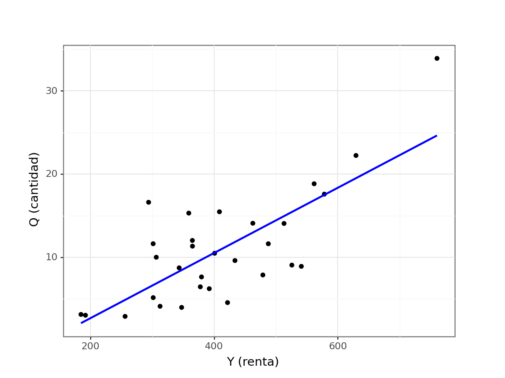

Aplicación 1.4 (Regresiones con datos de corte transversal): Demanda familiar de carne
En esta aplicación se estimará una función de demanda de carne con datos microeconómicos sobre 30 familias americanas ( i = 1, 2,…, 30):
\[Q_{i} = f(P_{i}, Y_{i}) + e_{i}\]
donde Q representa la cantidad demandada, P es el precio pagado por ella en el mercado y, finalmente, Y es la renta familiar neta disponible.
Desde el punto de vista técnico, en el ejemplo se utilizarán distintas funciones y librerías que permiten la estimación de modelos estadísticos. Concretamente, en el caso del lenguaje R se usa la función lm() (https://rstudio.github.io/r-manuals/r-intro/Statistical-models-in-R.html) para el ajuste del modelo lineal propuesto, y en el caso de Python se proponen tanto el uso de la librería estándar en este lenguaje de programación para la estimación de modelos estadísticos y econométricos, statsmodels (https://www.statsmodels.org/), como la librería scikit-learn (https://scikit-learn.org/), si bien esta última está más especializada en técnicas generales de machine learning.
Código R
# Lectura de librerías
library(tidyverse)
library(GGally)
library(modelsummary)
library(skimr)
# Lectura de datos
DEM_CARNE <- read_csv("data/DEM_CARNE.csv")
# Descripción de la base muestral
dim(DEM_CARNE)[1] 30 3str(DEM_CARNE)spc_tbl_ [30 × 3] (S3: spec_tbl_df/tbl_df/tbl/data.frame)
$ P: num [1:30] 10.76 13.03 9.24 4.61 13.04 ...
$ Q: num [1:30] 11.63 12.03 8.92 33.91 4.56 ...
$ Y: num [1:30] 488 365 541 760 422 ...
- attr(*, "spec")=
.. cols(
.. P = col_double(),
.. Q = col_double(),
.. Y = col_double()
.. )
- attr(*, "problems")=<externalptr> head(DEM_CARNE)# A tibble: 6 × 3
P Q Y
<dbl> <dbl> <dbl>
1 10.8 11.6 488.
2 13.0 12.0 365.
3 9.24 8.92 541.
4 4.61 33.9 760.
5 13.0 4.56 422.
6 7.71 17.6 578.tail(DEM_CARNE)# A tibble: 6 × 3
P Q Y
<dbl> <dbl> <dbl>
1 5.48 2.90 256.
2 7.89 3.14 185.
3 8.46 15.3 359.
4 6.20 22.2 629.
5 6.74 10.0 307.
6 12.0 3.98 347.# Análisis exploratorio (EDA)
# Estadística descriptiva
# Resultados estándar (R 'base')
summary(DEM_CARNE) P Q Y
Min. : 4.016 Min. : 2.903 Min. :184.8
1st Qu.: 6.556 1st Qu.: 6.288 1st Qu.:320.4
Median : 7.737 Median : 9.813 Median :385.9
Mean : 8.374 Mean :10.892 Mean :409.4
3rd Qu.:10.523 3rd Qu.:14.089 3rd Qu.:485.4
Max. :14.219 Max. :33.908 Max. :760.3 # Librería skimr (https://cran.r-project.org/web/packages/skimr/)
skim(DEM_CARNE)| Name | DEM_CARNE |
| Number of rows | 30 |
| Number of columns | 3 |
| _______________________ | |
| Column type frequency: | |
| numeric | 3 |
| ________________________ | |
| Group variables | None |
Variable type: numeric
| skim_variable | n_missing | complete_rate | mean | sd | p0 | p25 | p50 | p75 | p100 | hist |
|---|---|---|---|---|---|---|---|---|---|---|
| P | 0 | 1 | 8.37 | 2.84 | 4.02 | 6.56 | 7.74 | 10.52 | 14.22 | ▅▇▃▃▃ |
| Q | 0 | 1 | 10.89 | 6.67 | 2.90 | 6.29 | 9.81 | 14.09 | 33.91 | ▇▅▃▁▁ |
| Y | 0 | 1 | 409.42 | 127.84 | 184.80 | 320.38 | 385.93 | 485.45 | 760.34 | ▂▇▃▂▁ |
# Librería modelsummary (https://modelsummary.com/)
datasummary_correlation(DEM_CARNE)| P | Q | Y | |
|---|---|---|---|
| P | 1 | . | . |
| Q | −.33 | 1 | . |
| Y | −.01 | .75 | 1 |
# Gráficas parciales
# Librería GGally
GGally::ggpairs(DEM_CARNE)
# Librería ggplot
ggplot(DEM_CARNE, aes(x = P, y = Q)) +
geom_point() +
geom_smooth(method='lm', formula = y~x, se = FALSE) +
xlab("P (precio)") +
ylab("Q (cantidad)") +
theme_minimal()
ggplot(DEM_CARNE, aes(x = Y, y = Q)) +
geom_point() +
geom_smooth(method='lm', formula = y~x, se = FALSE) +
xlab("Y (renta)") +
ylab("Q (cantidad)") +
theme_minimal()
# Regresión por MCO del modelo lineal Q = beta1 + beta2*P + beta3*Y + e
# Comando lm() de R-stats (<https://rdrr.io/r/stats/lm.html>).
lin_model <- lm(formula = Q ~ P + Y, data = DEM_CARNE)
# Resultados estándar (R base)
summary(lin_model)
Call:
lm(formula = Q ~ P + Y, data = DEM_CARNE)
Residuals:
Min 1Q Median 3Q Max
-6.4429 -2.6144 -0.5625 1.7284 6.8800
Coefficients:
Estimate Std. Error t value Pr(>|t|)
(Intercept) 1.345236 3.301677 0.407 0.68690
P -0.767780 0.259243 -2.962 0.00631 **
Y 0.039020 0.005762 6.772 2.84e-07 ***
---
Signif. codes: 0 '***' 0.001 '**' 0.01 '*' 0.05 '.' 0.1 ' ' 1
Residual standard error: 3.966 on 27 degrees of freedom
Multiple R-squared: 0.6709, Adjusted R-squared: 0.6465
F-statistic: 27.52 on 2 and 27 DF, p-value: 3.052e-07# Resultados formateados (librería modelsummary)
modelsummary(lin_model)| (1) | |
|---|---|
| (Intercept) | 1.345 |
| (3.302) | |
| P | −0.768 |
| (0.259) | |
| Y | 0.039 |
| (0.006) | |
| Num.Obs. | 30 |
| R2 | 0.671 |
| R2 Adj. | 0.646 |
| AIC | 172.6 |
| BIC | 178.3 |
| Log.Lik. | −82.324 |
| F | 27.516 |
| RMSE | 3.76 |
modelplot(lin_model)
# ANEXO: Regresión por MCO del modelo propuesto en versión logarítmica
# log(Q) = beta1 + beta2*log(P) + beta3*log(Y) + e
log_model <- lm(formula = log(Q) ~ log(P) + log(Y), data = DEM_CARNE)
summary(log_model)
Call:
lm(formula = log(Q) ~ log(P) + log(Y), data = DEM_CARNE)
Residuals:
Min 1Q Median 3Q Max
-0.75112 -0.24829 0.01212 0.14647 0.67313
Coefficients:
Estimate Std. Error t value Pr(>|t|)
(Intercept) -5.1704 1.4151 -3.654 0.0011 **
log(P) -0.5663 0.2148 -2.636 0.0137 *
log(Y) 1.4337 0.2287 6.270 1.04e-06 ***
---
Signif. codes: 0 '***' 0.001 '**' 0.01 '*' 0.05 '.' 0.1 ' ' 1
Residual standard error: 0.3941 on 27 degrees of freedom
Multiple R-squared: 0.6234, Adjusted R-squared: 0.5955
F-statistic: 22.35 on 2 and 27 DF, p-value: 1.882e-06Código Python
# Lectura de librerías
import numpy as np
import pandas as pd
import matplotlib.pyplot as plt
import seaborn as sns
from plotnine import *
# https://www.statsmodels.org/stable/api.html
import statsmodels.api as sm
import statsmodels.formula.api as smf
# https://scikit-learn.org/stable/modules/linear_model.html
from sklearn import linear_model
from sklearn.metrics import r2_score
# from skimpy import skim
# Lectura de datos
DEM_CARNE = pd.read_csv("data/DEM_CARNE.csv")
# Descripción de la base muestral
DEM_CARNE.shape(30, 3)DEM_CARNE.info()<class 'pandas.core.frame.DataFrame'>
RangeIndex: 30 entries, 0 to 29
Data columns (total 3 columns):
# Column Non-Null Count Dtype
--- ------ -------------- -----
0 P 30 non-null float64
1 Q 30 non-null float64
2 Y 30 non-null float64
dtypes: float64(3)
memory usage: 848.0 bytesDEM_CARNE.head() P Q Y
0 10.763 11.632 487.648
1 13.033 12.029 364.877
2 9.244 8.916 541.037
3 4.605 33.908 760.343
4 13.045 4.561 421.746DEM_CARNE.tail() P Q Y
25 7.890 3.138 184.798
26 8.460 15.315 359.084
27 6.195 22.240 629.378
28 6.743 10.012 306.527
29 11.977 3.982 347.488# Análisis exploratorio (EDA)
# Estadística descriptiva
# Resultados estándar (Python 'base')
DEM_CARNE.describe() P Q Y
count 30.000000 30.000000 30.000000
mean 8.373533 10.891567 409.418633
std 2.841277 6.671015 127.842689
min 4.016000 2.903000 184.798000
25% 6.555500 6.287750 320.382250
50% 7.737500 9.813000 385.925500
75% 10.523250 14.089500 485.449750
max 14.219000 33.908000 760.343000# Librería Skimpy (https://aeturrell.github.io/skimpy/)
# skim(DEM_CARNE)
# Gráficas parciales
# Librería seaborn
sns.pairplot(data = DEM_CARNE, diag_kind = 'kde');
plt.show()
# Librería plotnine (ggplot en Python)
(ggplot(DEM_CARNE,aes('P','Q')) +
geom_point() +
geom_smooth(method='lm',se=False, color = "blue") +
labs(x="P (precio)",y="Q (cantidad)") + theme_bw())<ggplot: (324967770)>
(ggplot(DEM_CARNE,aes('Y','Q')) +
geom_point() +
geom_smooth(method='lm',se=False, color = "blue") +
labs(x="Y (renta)",y="Q (cantidad)") + theme_bw())<ggplot: (322813556)>
# Regresión por MCO del modelo lineal Q = beta1 + beta2*P + beta3*Y + e
# Comando `smf.ols` de la librería `statsmodels`
# (<https://www.statsmodels.org/>)
model = smf.ols(formula = "Q ~ P + Y", data = DEM_CARNE)
lin_model_1 = model.fit()
print(lin_model_1.summary()) OLS Regression Results
==============================================================================
Dep. Variable: Q R-squared: 0.671
Model: OLS Adj. R-squared: 0.646
Method: Least Squares F-statistic: 27.52
Date: Tue, 14 Nov 2023 Prob (F-statistic): 3.05e-07
Time: 17:41:53 Log-Likelihood: -82.324
No. Observations: 30 AIC: 170.6
Df Residuals: 27 BIC: 174.9
Df Model: 2
Covariance Type: nonrobust
==============================================================================
coef std err t P>|t| [0.025 0.975]
------------------------------------------------------------------------------
Intercept 1.3452 3.302 0.407 0.687 -5.429 8.120
P -0.7678 0.259 -2.962 0.006 -1.300 -0.236
Y 0.0390 0.006 6.772 0.000 0.027 0.051
==============================================================================
Omnibus: 1.346 Durbin-Watson: 2.328
Prob(Omnibus): 0.510 Jarque-Bera (JB): 1.218
Skew: 0.347 Prob(JB): 0.544
Kurtosis: 2.297 Cond. No. 1.96e+03
==============================================================================
Notes:
[1] Standard Errors assume that the covariance matrix of the errors is correctly specified.
[2] The condition number is large, 1.96e+03. This might indicate that there are
strong multicollinearity or other numerical problems.# Comando `linear_model` de la librería `scikit-learn`
# (<https://scikit-learn.org/>)
lr = linear_model.LinearRegression()
lin_model_2 = lr.fit (X=DEM_CARNE[["P", "Y"]], y=DEM_CARNE["Q"])
print("Ordenada en el origen: \n", lin_model_2.intercept_)Ordenada en el origen:
1.3452364833219423print("Efectos marginales: \n", lin_model_2.coef_)Efectos marginales:
[-0.76777964 0.03901962]# ANEXO: Regresión por MCO del modelo propuesto en versión logarítmica
# log(Q) = beta1 + beta2*log(P) + beta3*log(Y) + e
model = smf.ols(formula = "np.log(Q) ~ np.log(P) + np.log(Y)", data = DEM_CARNE)
log_model = model.fit()
print(log_model.summary()) OLS Regression Results
==============================================================================
Dep. Variable: np.log(Q) R-squared: 0.623
Model: OLS Adj. R-squared: 0.595
Method: Least Squares F-statistic: 22.35
Date: Tue, 14 Nov 2023 Prob (F-statistic): 1.88e-06
Time: 17:41:53 Log-Likelihood: -13.053
No. Observations: 30 AIC: 32.11
Df Residuals: 27 BIC: 36.31
Df Model: 2
Covariance Type: nonrobust
==============================================================================
coef std err t P>|t| [0.025 0.975]
------------------------------------------------------------------------------
Intercept -5.1704 1.415 -3.654 0.001 -8.074 -2.267
np.log(P) -0.5663 0.215 -2.636 0.014 -1.007 -0.126
np.log(Y) 1.4337 0.229 6.270 0.000 0.965 1.903
==============================================================================
Omnibus: 0.530 Durbin-Watson: 2.252
Prob(Omnibus): 0.767 Jarque-Bera (JB): 0.636
Skew: 0.147 Prob(JB): 0.728
Kurtosis: 2.350 Cond. No. 127.
==============================================================================
Notes:
[1] Standard Errors assume that the covariance matrix of the errors is correctly specified.